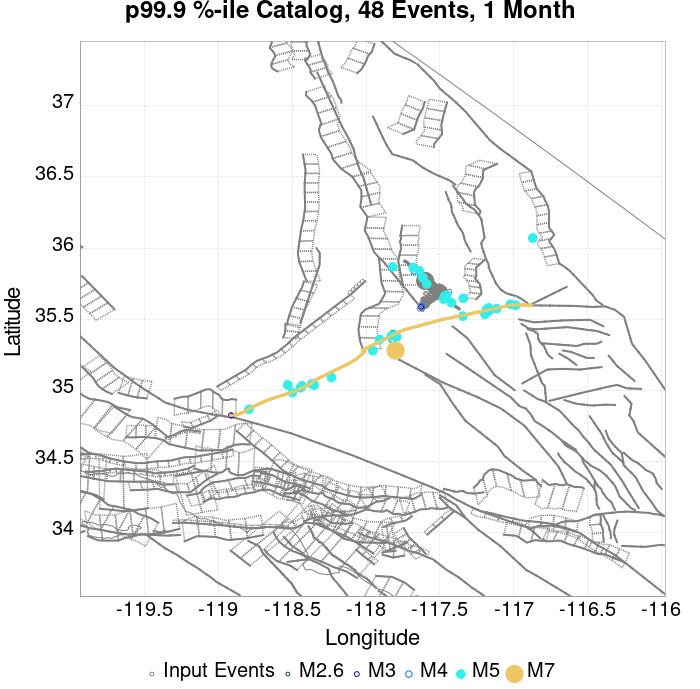
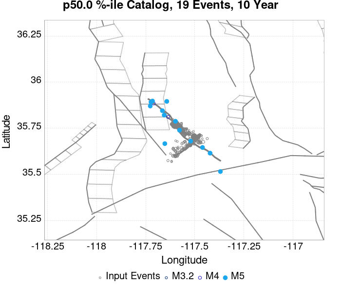
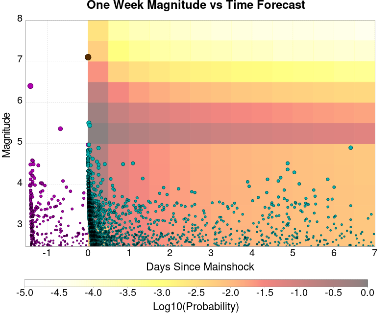
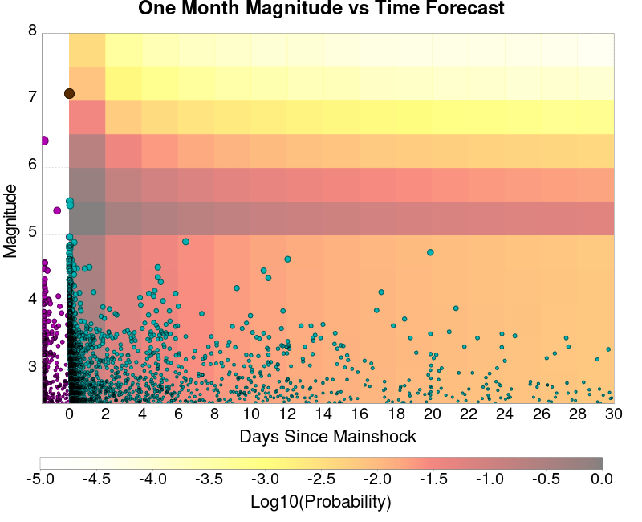

| ComCat M7.1 (ci38457511), ShakeMap Surfaces, FM2_1 | |
|---|---|
| Num Simulations | 1000000 |
| Start Time | 2019/07/06 03:19:54 UTC |
| Start Time Epoch Milliseconds | 1562383194040 |
| Duration | 10 Years |
| Includes Spontaneous? | false |
| Trigger Ruptures | 283 Trigger Ruptures |
| First: M3.98 at 2019/07/04 17:02:55 UTC | |
| Last: M7.1 at 2019/07/06 03:19:53 UTC | |
| Largest: M7.1 at 2019/07/06 03:19:53 UTC | |
| Trigger Ruptures | (none) |
| Config Generated With | u3etas_comcat_event_config_builder.sh --event-id ci38457511 --mag-complete 3.5 --days-before 7 --num-simulations 1000000 --fault-model FM2_1 --finite-surf-shakemap --finite-surf-shakemap-min-mag 5 --hpc-site USC_HPC --nodes 36 --hours 24 --queue scec |
| Magnitude | 1 Hour Prob | 1 Day Prob | 1 Week Prob | 1 Month Prob | 1 Year Prob | 10 Year Prob |
|---|---|---|---|---|---|---|
| M≥5 | 0.767 (76.71%) | 0.976 (97.63%) | 0.995 (99.52%) | 0.999 (99.86%) | 1.000 (99.98%) | 1.000 (100.00%) |
| 95% Conf | [76.62% 76.79%] | [97.60% 97.66%] | [99.50% 99.53%] | [99.85% 99.87%] | [99.98% 99.99%] | [100.00% 100.00%] |
| M≥5.5 | 0.340 (33.99%) | 0.665 (66.53%) | 0.794 (79.44%) | 0.860 (85.98%) | 0.928 (92.77%) | 0.960 (96.05%) |
| 95% Conf | [33.89% 34.08%] | [66.44% 66.62%] | [79.36% 79.52%] | [85.91% 86.05%] | [92.72% 92.82%] | [96.01% 96.09%] |
| M≥6 | 0.082 (8.22%) | 0.209 (20.89%) | 0.294 (29.41%) | 0.357 (35.72%) | 0.457 (45.67%) | 0.536 (53.59%) |
| 95% Conf | [8.17% 8.27%] | [20.81% 20.97%] | [29.33% 29.50%] | [35.62% 35.81%] | [45.57% 45.77%] | [53.50% 53.69%] |
| M≥6.5 | 0.015 (1.48%) | 0.042 (4.16%) | 0.063 (6.33%) | 0.081 (8.14%) | 0.115 (11.46%) | 0.146 (14.61%) |
| 95% Conf | [1.46% 1.51%] | [4.12% 4.20%] | [6.28% 6.37%] | [8.09% 8.20%] | [11.40% 11.52%] | [14.54% 14.67%] |
| M≥7 | 3.83E-3 (0.38%) | 0.011 (1.07%) | 0.016 (1.62%) | 0.021 (2.09%) | 0.030 (2.98%) | 0.039 (3.86%) |
| 95% Conf | [0.37% 0.40%] | [1.05% 1.09%] | [1.60% 1.65%] | [2.06% 2.11%] | [2.95% 3.01%] | [3.82% 3.90%] |
| M≥7.1 | 3.13E-3 (0.31%) | 8.69E-3 (0.87%) | 0.013 (1.32%) | 0.017 (1.69%) | 0.024 (2.39%) | 0.031 (3.11%) |
| 95% Conf | [0.30% 0.32%] | [0.85% 0.89%] | [1.29% 1.34%] | [1.66% 1.71%] | [2.36% 2.42%] | [3.07% 3.14%] |
| M≥7.5 | 1.28E-3 (0.13%) | 3.41E-3 (0.34%) | 5.12E-3 (0.51%) | 6.45E-3 (0.65%) | 9.05E-3 (0.90%) | 0.012 (1.17%) |
| 95% Conf | [0.12% 0.13%] | [0.33% 0.35%] | [0.50% 0.53%] | [0.63% 0.66%] | [0.89% 0.92%] | [1.14% 1.19%] |
| M≥8 | 6.00E-6 (0.00%) | 2.30E-5 (0.00%) | 4.00E-5 (0.00%) | 5.80E-5 (0.01%) | 8.70E-5 (0.01%) | 1.27E-4 (0.01%) |
| 95% Conf | [0.00% 0.00%] | [0.00% 0.00%] | [0.00% 0.01%] | [0.00% 0.01%] | [0.01% 0.01%] | [0.01% 0.02%] |
Legend
| Mag | Mean | 2.5 %ile | 97.5 %ile | Median | Mode | 10 yr Probability | 10 yr Prob 95% Conf | 10 yr Supra-Seis Prob | Primary Aftershocks Mean |
|---|---|---|---|---|---|---|---|---|---|
| M≥5 | 15.158 | 5.000 | 35.000 | 13.000 | 12.000 | 1.000 (100.00%) | [100.00% 100.00%] | 0.123 (12.29%) | 7.233 |
| M≥5.1 | 11.893 | 4.000 | 28.000 | 11.000 | 9.000 | 1.000 (99.98%) | [99.97% 99.98%] | 0.123 (12.29%) | 5.674 |
| M≥5.2 | 9.301 | 2.000 | 23.000 | 8.000 | 7.000 | 0.999 (99.87%) | [99.86% 99.87%] | 0.123 (12.29%) | 4.437 |
| M≥5.3 | 7.242 | 1.000 | 18.000 | 6.000 | 5.000 | 0.995 (99.46%) | [99.44% 99.47%] | 0.123 (12.29%) | 3.453 |
| M≥5.4 | 5.606 | 1.000 | 15.000 | 5.000 | 4.000 | 0.984 (98.39%) | [98.36% 98.41%] | 0.123 (12.29%) | 2.672 |
| M≥5.5 | 4.309 | 0.000 | 12.000 | 4.000 | 3.000 | 0.960 (96.05%) | [96.01% 96.09%] | 0.123 (12.29%) | 2.053 |
| M≥5.6 | 3.276 | 0.000 | 10.000 | 3.000 | 2.000 | 0.918 (91.84%) | [91.79% 91.89%] | 0.123 (12.29%) | 1.560 |
| M≥5.7 | 2.456 | 0.000 | 8.000 | 2.000 | 1.000 | 0.853 (85.31%) | [85.24% 85.38%] | 0.123 (12.29%) | 1.167 |
| M≥5.8 | 1.805 | 0.000 | 6.000 | 1.000 | 1.000 | 0.763 (76.30%) | [76.22% 76.38%] | 0.123 (12.29%) | 0.857 |
| M≥5.9 | 1.292 | 0.000 | 5.000 | 1.000 | 0.000 | 0.651 (65.12%) | [65.02% 65.21%] | 0.123 (12.29%) | 0.612 |
| M≥6 | 0.925 | 0.000 | 4.000 | 1.000 | 0.000 | 0.536 (53.59%) | [53.50% 53.69%] | 0.123 (12.29%) | 0.433 |
| M≥6.1 | 0.670 | 0.000 | 3.000 | 0.000 | 0.000 | 0.430 (42.99%) | [42.89% 43.09%] | 0.123 (12.28%) | 0.306 |
| M≥6.2 | 0.465 | 0.000 | 3.000 | 0.000 | 0.000 | 0.323 (32.32%) | [32.22% 32.41%] | 0.123 (12.28%) | 0.203 |
| M≥6.3 | 0.366 | 0.000 | 2.000 | 0.000 | 0.000 | 0.264 (26.42%) | [26.34% 26.51%] | 0.123 (12.28%) | 0.154 |
| M≥6.4 | 0.233 | 0.000 | 2.000 | 0.000 | 0.000 | 0.174 (17.37%) | [17.30% 17.45%] | 0.072 (7.23%) | 0.097 |
| M≥6.5 | 0.195 | 0.000 | 2.000 | 0.000 | 0.000 | 0.146 (14.61%) | [14.54% 14.67%] | 0.072 (7.23%) | 0.079 |
| M≥6.6 | 0.142 | 0.000 | 1.000 | 0.000 | 0.000 | 0.116 (11.59%) | [11.53% 11.65%] | 0.062 (6.24%) | 0.060 |
| M≥6.7 | 0.111 | 0.000 | 1.000 | 0.000 | 0.000 | 0.092 (9.17%) | [9.12% 9.23%] | 0.054 (5.41%) | 0.046 |
| M≥6.8 | 0.092 | 0.000 | 1.000 | 0.000 | 0.000 | 0.077 (7.71%) | [7.66% 7.77%] | 0.052 (5.16%) | 0.038 |
| M≥6.9 | 0.055 | 0.000 | 1.000 | 0.000 | 0.000 | 0.047 (4.73%) | [4.69% 4.78%] | 0.030 (3.01%) | 0.023 |
| M≥7 | 0.045 | 0.000 | 1.000 | 0.000 | 0.000 | 0.039 (3.86%) | [3.82% 3.90%] | 0.028 (2.78%) | 0.019 |
| M≥7.1 | 0.036 | 0.000 | 1.000 | 0.000 | 0.000 | 0.031 (3.11%) | [3.07% 3.14%] | 0.025 (2.46%) | 0.015 |
| M≥7.2 | 0.029 | 0.000 | 1.000 | 0.000 | 0.000 | 0.025 (2.54%) | [2.51% 2.58%] | 0.022 (2.19%) | 0.012 |
| M≥7.3 | 0.022 | 0.000 | 0.000 | 0.000 | 0.000 | 0.019 (1.91%) | [1.88% 1.94%] | 0.017 (1.74%) | 9.25E-3 |
| M≥7.4 | 0.018 | 0.000 | 0.000 | 0.000 | 0.000 | 0.016 (1.56%) | [1.53% 1.58%] | 0.015 (1.48%) | 7.81E-3 |
| M≥7.5 | 0.013 | 0.000 | 0.000 | 0.000 | 0.000 | 0.012 (1.17%) | [1.14% 1.19%] | 0.011 (1.14%) | 5.83E-3 |
| M≥7.6 | 0.012 | 0.000 | 0.000 | 0.000 | 0.000 | 0.011 (1.05%) | [1.03% 1.08%] | 0.010 (1.05%) | 5.29E-3 |
| M≥7.7 | 4.92E-3 | 0.000 | 0.000 | 0.000 | 0.000 | 4.44E-3 (0.44%) | [0.43% 0.46%] | 4.39E-3 (0.44%) | 1.65E-3 |
| M≥7.8 | 1.48E-3 | 0.000 | 0.000 | 0.000 | 0.000 | 1.47E-3 (0.15%) | [0.14% 0.15%] | 1.44E-3 (0.14%) | 1.67E-4 |
| M≥7.9 | 4.72E-4 | 0.000 | 0.000 | 0.000 | 0.000 | 4.72E-4 (0.05%) | [0.04% 0.05%] | 4.72E-4 (0.05%) | 4.00E-5 |
| M≥8 | 1.27E-4 | 0.000 | 0.000 | 0.000 | 0.000 | 1.27E-4 (0.01%) | [0.01% 0.02%] | 1.27E-4 (0.01%) | 1.00E-5 |
| M≥8.1 | 4.30E-5 | 0.000 | 0.000 | 0.000 | 0.000 | 4.30E-5 (0.00%) | [0.00% 0.01%] | 4.30E-5 (0.00%) | 2.00E-6 |
| M≥8.2 | 0.000 | 0.000 | 0.000 | 0.000 | 0.000 | 0.000 (0.00%) | [0.00% 0.00%] | 0.000 (0.00%) | 0.000 |
| M≥8.3 | 0.000 | 0.000 | 0.000 | 0.000 | 0.000 | 0.000 (0.00%) | [0.00% 0.00%] | 0.000 (0.00%) | 0.000 |
| M≥8.4 | 0.000 | 0.000 | 0.000 | 0.000 | 0.000 | 0.000 (0.00%) | [0.00% 0.00%] | 0.000 (0.00%) | 0.000 |
| M≥8.5 | 0.000 | 0.000 | 0.000 | 0.000 | 0.000 | 0.000 (0.00%) | [0.00% 0.00%] | 0.000 (0.00%) | 0.000 |
| M≥8.6 | 0.000 | 0.000 | 0.000 | 0.000 | 0.000 | 0.000 (0.00%) | [0.00% 0.00%] | 0.000 (0.00%) | 0.000 |
| M≥8.7 | 0.000 | 0.000 | 0.000 | 0.000 | 0.000 | 0.000 (0.00%) | [0.00% 0.00%] | 0.000 (0.00%) | 0.000 |
| M≥8.8 | 0.000 | 0.000 | 0.000 | 0.000 | 0.000 | 0.000 (0.00%) | [0.00% 0.00%] | 0.000 (0.00%) | 0.000 |
| M≥8.9 | 0.000 | 0.000 | 0.000 | 0.000 | 0.000 | 0.000 (0.00%) | [0.00% 0.00%] | 0.000 (0.00%) | 0.000 |
| M≥9 | 0.000 | 0.000 | 0.000 | 0.000 | 0.000 | 0.000 (0.00%) | [0.00% 0.00%] | 0.000 (0.00%) | 0.000 |
Legend

| Mag | Mean | 2.5 %ile | 97.5 %ile | Median | Mode | 1 yr Probability | 1 yr Prob 95% Conf | 1 yr Supra-Seis Prob | Primary Aftershocks Mean |
|---|---|---|---|---|---|---|---|---|---|
| M≥5 | 11.646 | 4.000 | 25.000 | 11.000 | 9.000 | 1.000 (99.98%) | [99.98% 99.99%] | 0.094 (9.43%) | 6.299 |
| M≥5.1 | 9.136 | 2.000 | 21.000 | 8.000 | 7.000 | 0.999 (99.89%) | [99.89% 99.90%] | 0.094 (9.43%) | 4.941 |
| M≥5.2 | 7.143 | 2.000 | 17.000 | 6.000 | 6.000 | 0.996 (99.56%) | [99.55% 99.57%] | 0.094 (9.43%) | 3.862 |
| M≥5.3 | 5.561 | 1.000 | 14.000 | 5.000 | 4.000 | 0.986 (98.63%) | [98.60% 98.65%] | 0.094 (9.43%) | 3.005 |
| M≥5.4 | 4.304 | 0.000 | 11.000 | 4.000 | 3.000 | 0.965 (96.55%) | [96.51% 96.58%] | 0.094 (9.43%) | 2.325 |
| M≥5.5 | 3.307 | 0.000 | 9.000 | 3.000 | 2.000 | 0.928 (92.77%) | [92.72% 92.82%] | 0.094 (9.43%) | 1.785 |
| M≥5.6 | 2.514 | 0.000 | 8.000 | 2.000 | 1.000 | 0.869 (86.91%) | [86.84% 86.98%] | 0.094 (9.43%) | 1.356 |
| M≥5.7 | 1.884 | 0.000 | 6.000 | 2.000 | 1.000 | 0.788 (78.76%) | [78.68% 78.84%] | 0.094 (9.43%) | 1.015 |
| M≥5.8 | 1.383 | 0.000 | 5.000 | 1.000 | 1.000 | 0.686 (68.57%) | [68.47% 68.66%] | 0.094 (9.43%) | 0.744 |
| M≥5.9 | 0.990 | 0.000 | 4.000 | 1.000 | 0.000 | 0.570 (56.95%) | [56.85% 57.05%] | 0.094 (9.43%) | 0.531 |
| M≥6 | 0.707 | 0.000 | 3.000 | 0.000 | 0.000 | 0.457 (45.67%) | [45.57% 45.77%] | 0.094 (9.43%) | 0.375 |
| M≥6.1 | 0.509 | 0.000 | 3.000 | 0.000 | 0.000 | 0.358 (35.79%) | [35.70% 35.89%] | 0.094 (9.42%) | 0.265 |
| M≥6.2 | 0.350 | 0.000 | 2.000 | 0.000 | 0.000 | 0.262 (26.21%) | [26.12% 26.29%] | 0.094 (9.42%) | 0.174 |
| M≥6.3 | 0.274 | 0.000 | 2.000 | 0.000 | 0.000 | 0.211 (21.14%) | [21.06% 21.22%] | 0.094 (9.42%) | 0.132 |
| M≥6.4 | 0.173 | 0.000 | 2.000 | 0.000 | 0.000 | 0.137 (13.70%) | [13.64% 13.77%] | 0.056 (5.60%) | 0.083 |
| M≥6.5 | 0.144 | 0.000 | 1.000 | 0.000 | 0.000 | 0.115 (11.46%) | [11.40% 11.52%] | 0.056 (5.59%) | 0.067 |
| M≥6.6 | 0.106 | 0.000 | 1.000 | 0.000 | 0.000 | 0.090 (9.04%) | [8.98% 9.10%] | 0.048 (4.82%) | 0.052 |
| M≥6.7 | 0.083 | 0.000 | 1.000 | 0.000 | 0.000 | 0.071 (7.12%) | [7.07% 7.17%] | 0.042 (4.17%) | 0.040 |
| M≥6.8 | 0.069 | 0.000 | 1.000 | 0.000 | 0.000 | 0.060 (5.98%) | [5.93% 6.02%] | 0.040 (3.98%) | 0.033 |
| M≥6.9 | 0.041 | 0.000 | 1.000 | 0.000 | 0.000 | 0.037 (3.65%) | [3.62% 3.69%] | 0.023 (2.32%) | 0.020 |
| M≥7 | 0.034 | 0.000 | 1.000 | 0.000 | 0.000 | 0.030 (2.98%) | [2.95% 3.01%] | 0.021 (2.14%) | 0.016 |
| M≥7.1 | 0.027 | 0.000 | 0.000 | 0.000 | 0.000 | 0.024 (2.39%) | [2.36% 2.42%] | 0.019 (1.89%) | 0.013 |
| M≥7.2 | 0.022 | 0.000 | 0.000 | 0.000 | 0.000 | 0.020 (1.97%) | [1.94% 1.99%] | 0.017 (1.69%) | 0.011 |
| M≥7.3 | 0.016 | 0.000 | 0.000 | 0.000 | 0.000 | 0.015 (1.47%) | [1.45% 1.50%] | 0.013 (1.34%) | 8.04E-3 |
| M≥7.4 | 0.013 | 0.000 | 0.000 | 0.000 | 0.000 | 0.012 (1.21%) | [1.18% 1.23%] | 0.012 (1.15%) | 6.80E-3 |
| M≥7.5 | 0.010 | 0.000 | 0.000 | 0.000 | 0.000 | 9.05E-3 (0.90%) | [0.89% 0.92%] | 8.86E-3 (0.89%) | 5.08E-3 |
| M≥7.6 | 9.32E-3 | 0.000 | 0.000 | 0.000 | 0.000 | 8.19E-3 (0.82%) | [0.80% 0.84%] | 8.13E-3 (0.81%) | 4.61E-3 |
| M≥7.7 | 3.59E-3 | 0.000 | 0.000 | 0.000 | 0.000 | 3.30E-3 (0.33%) | [0.32% 0.34%] | 3.27E-3 (0.33%) | 1.43E-3 |
| M≥7.8 | 9.85E-4 | 0.000 | 0.000 | 0.000 | 0.000 | 9.80E-4 (0.10%) | [0.09% 0.10%] | 9.61E-4 (0.10%) | 1.39E-4 |
| M≥7.9 | 3.21E-4 | 0.000 | 0.000 | 0.000 | 0.000 | 3.21E-4 (0.03%) | [0.03% 0.04%] | 3.21E-4 (0.03%) | 3.50E-5 |
| M≥8 | 8.70E-5 | 0.000 | 0.000 | 0.000 | 0.000 | 8.70E-5 (0.01%) | [0.01% 0.01%] | 8.70E-5 (0.01%) | 1.00E-5 |
| M≥8.1 | 2.70E-5 | 0.000 | 0.000 | 0.000 | 0.000 | 2.70E-5 (0.00%) | [0.00% 0.00%] | 2.70E-5 (0.00%) | 2.00E-6 |
| M≥8.2 | 0.000 | 0.000 | 0.000 | 0.000 | 0.000 | 0.000 (0.00%) | [0.00% 0.00%] | 0.000 (0.00%) | 0.000 |
| M≥8.3 | 0.000 | 0.000 | 0.000 | 0.000 | 0.000 | 0.000 (0.00%) | [0.00% 0.00%] | 0.000 (0.00%) | 0.000 |
| M≥8.4 | 0.000 | 0.000 | 0.000 | 0.000 | 0.000 | 0.000 (0.00%) | [0.00% 0.00%] | 0.000 (0.00%) | 0.000 |
| M≥8.5 | 0.000 | 0.000 | 0.000 | 0.000 | 0.000 | 0.000 (0.00%) | [0.00% 0.00%] | 0.000 (0.00%) | 0.000 |
| M≥8.6 | 0.000 | 0.000 | 0.000 | 0.000 | 0.000 | 0.000 (0.00%) | [0.00% 0.00%] | 0.000 (0.00%) | 0.000 |
| M≥8.7 | 0.000 | 0.000 | 0.000 | 0.000 | 0.000 | 0.000 (0.00%) | [0.00% 0.00%] | 0.000 (0.00%) | 0.000 |
| M≥8.8 | 0.000 | 0.000 | 0.000 | 0.000 | 0.000 | 0.000 (0.00%) | [0.00% 0.00%] | 0.000 (0.00%) | 0.000 |
| M≥8.9 | 0.000 | 0.000 | 0.000 | 0.000 | 0.000 | 0.000 (0.00%) | [0.00% 0.00%] | 0.000 (0.00%) | 0.000 |
| M≥9 | 0.000 | 0.000 | 0.000 | 0.000 | 0.000 | 0.000 (0.00%) | [0.00% 0.00%] | 0.000 (0.00%) | 0.000 |
Legend

| Mag | Mean | 2.5 %ile | 97.5 %ile | Median | Mode | 1 mo Probability | 1 mo Prob 95% Conf | 1 mo Supra-Seis Prob | Primary Aftershocks Mean |
|---|---|---|---|---|---|---|---|---|---|
| M≥5 | 8.194 | 2.000 | 18.000 | 8.000 | 7.000 | 0.999 (99.86%) | [99.85% 99.87%] | 0.066 (6.57%) | 5.104 |
| M≥5.1 | 6.427 | 1.000 | 14.000 | 6.000 | 5.000 | 0.994 (99.45%) | [99.43% 99.46%] | 0.066 (6.57%) | 4.003 |
| M≥5.2 | 5.024 | 1.000 | 12.000 | 5.000 | 4.000 | 0.983 (98.34%) | [98.32% 98.37%] | 0.066 (6.57%) | 3.128 |
| M≥5.3 | 3.909 | 0.000 | 10.000 | 3.000 | 3.000 | 0.960 (96.04%) | [96.01% 96.08%] | 0.066 (6.57%) | 2.433 |
| M≥5.4 | 3.025 | 0.000 | 8.000 | 3.000 | 2.000 | 0.920 (92.04%) | [91.99% 92.09%] | 0.066 (6.57%) | 1.881 |
| M≥5.5 | 2.324 | 0.000 | 7.000 | 2.000 | 1.000 | 0.860 (85.98%) | [85.91% 86.05%] | 0.066 (6.57%) | 1.444 |
| M≥5.6 | 1.766 | 0.000 | 6.000 | 1.000 | 1.000 | 0.780 (77.98%) | [77.90% 78.06%] | 0.066 (6.57%) | 1.096 |
| M≥5.7 | 1.322 | 0.000 | 5.000 | 1.000 | 1.000 | 0.683 (68.27%) | [68.18% 68.36%] | 0.066 (6.57%) | 0.820 |
| M≥5.8 | 0.970 | 0.000 | 4.000 | 1.000 | 0.000 | 0.574 (57.35%) | [57.26% 57.45%] | 0.066 (6.57%) | 0.600 |
| M≥5.9 | 0.692 | 0.000 | 3.000 | 0.000 | 0.000 | 0.460 (45.97%) | [45.87% 46.07%] | 0.066 (6.57%) | 0.427 |
| M≥6 | 0.492 | 0.000 | 3.000 | 0.000 | 0.000 | 0.357 (35.72%) | [35.62% 35.81%] | 0.066 (6.57%) | 0.301 |
| M≥6.1 | 0.352 | 0.000 | 2.000 | 0.000 | 0.000 | 0.272 (27.20%) | [27.11% 27.28%] | 0.066 (6.56%) | 0.211 |
| M≥6.2 | 0.238 | 0.000 | 2.000 | 0.000 | 0.000 | 0.193 (19.29%) | [19.21% 19.36%] | 0.066 (6.56%) | 0.138 |
| M≥6.3 | 0.185 | 0.000 | 1.000 | 0.000 | 0.000 | 0.153 (15.32%) | [15.25% 15.39%] | 0.066 (6.56%) | 0.105 |
| M≥6.4 | 0.116 | 0.000 | 1.000 | 0.000 | 0.000 | 0.098 (9.76%) | [9.70% 9.82%] | 0.040 (3.96%) | 0.065 |
| M≥6.5 | 0.097 | 0.000 | 1.000 | 0.000 | 0.000 | 0.081 (8.14%) | [8.09% 8.20%] | 0.040 (3.96%) | 0.053 |
| M≥6.6 | 0.072 | 0.000 | 1.000 | 0.000 | 0.000 | 0.064 (6.41%) | [6.36% 6.46%] | 0.034 (3.41%) | 0.041 |
| M≥6.7 | 0.056 | 0.000 | 1.000 | 0.000 | 0.000 | 0.050 (5.02%) | [4.97% 5.06%] | 0.029 (2.93%) | 0.032 |
| M≥6.8 | 0.046 | 0.000 | 1.000 | 0.000 | 0.000 | 0.042 (4.20%) | [4.16% 4.24%] | 0.028 (2.80%) | 0.026 |
| M≥6.9 | 0.028 | 0.000 | 1.000 | 0.000 | 0.000 | 0.026 (2.56%) | [2.53% 2.59%] | 0.016 (1.64%) | 0.016 |
| M≥7 | 0.023 | 0.000 | 0.000 | 0.000 | 0.000 | 0.021 (2.09%) | [2.06% 2.11%] | 0.015 (1.51%) | 0.013 |
| M≥7.1 | 0.018 | 0.000 | 0.000 | 0.000 | 0.000 | 0.017 (1.69%) | [1.66% 1.71%] | 0.013 (1.34%) | 0.011 |
| M≥7.2 | 0.015 | 0.000 | 0.000 | 0.000 | 0.000 | 0.014 (1.39%) | [1.37% 1.41%] | 0.012 (1.20%) | 8.79E-3 |
| M≥7.3 | 0.011 | 0.000 | 0.000 | 0.000 | 0.000 | 0.010 (1.03%) | [1.01% 1.05%] | 9.44E-3 (0.94%) | 6.51E-3 |
| M≥7.4 | 9.27E-3 | 0.000 | 0.000 | 0.000 | 0.000 | 8.54E-3 (0.85%) | [0.84% 0.87%] | 8.19E-3 (0.82%) | 5.52E-3 |
| M≥7.5 | 7.10E-3 | 0.000 | 0.000 | 0.000 | 0.000 | 6.45E-3 (0.65%) | [0.63% 0.66%] | 6.33E-3 (0.63%) | 4.17E-3 |
| M≥7.6 | 6.48E-3 | 0.000 | 0.000 | 0.000 | 0.000 | 5.86E-3 (0.59%) | [0.57% 0.60%] | 5.81E-3 (0.58%) | 3.78E-3 |
| M≥7.7 | 2.36E-3 | 0.000 | 0.000 | 0.000 | 0.000 | 2.22E-3 (0.22%) | [0.21% 0.23%] | 2.19E-3 (0.22%) | 1.17E-3 |
| M≥7.8 | 5.86E-4 | 0.000 | 0.000 | 0.000 | 0.000 | 5.84E-4 (0.06%) | [0.05% 0.06%] | 5.70E-4 (0.06%) | 1.05E-4 |
| M≥7.9 | 1.89E-4 | 0.000 | 0.000 | 0.000 | 0.000 | 1.89E-4 (0.02%) | [0.02% 0.02%] | 1.89E-4 (0.02%) | 2.60E-5 |
| M≥8 | 5.80E-5 | 0.000 | 0.000 | 0.000 | 0.000 | 5.80E-5 (0.01%) | [0.00% 0.01%] | 5.80E-5 (0.01%) | 9.00E-6 |
| M≥8.1 | 1.70E-5 | 0.000 | 0.000 | 0.000 | 0.000 | 1.70E-5 (0.00%) | [0.00% 0.00%] | 1.70E-5 (0.00%) | 2.00E-6 |
| M≥8.2 | 0.000 | 0.000 | 0.000 | 0.000 | 0.000 | 0.000 (0.00%) | [0.00% 0.00%] | 0.000 (0.00%) | 0.000 |
| M≥8.3 | 0.000 | 0.000 | 0.000 | 0.000 | 0.000 | 0.000 (0.00%) | [0.00% 0.00%] | 0.000 (0.00%) | 0.000 |
| M≥8.4 | 0.000 | 0.000 | 0.000 | 0.000 | 0.000 | 0.000 (0.00%) | [0.00% 0.00%] | 0.000 (0.00%) | 0.000 |
| M≥8.5 | 0.000 | 0.000 | 0.000 | 0.000 | 0.000 | 0.000 (0.00%) | [0.00% 0.00%] | 0.000 (0.00%) | 0.000 |
| M≥8.6 | 0.000 | 0.000 | 0.000 | 0.000 | 0.000 | 0.000 (0.00%) | [0.00% 0.00%] | 0.000 (0.00%) | 0.000 |
| M≥8.7 | 0.000 | 0.000 | 0.000 | 0.000 | 0.000 | 0.000 (0.00%) | [0.00% 0.00%] | 0.000 (0.00%) | 0.000 |
| M≥8.8 | 0.000 | 0.000 | 0.000 | 0.000 | 0.000 | 0.000 (0.00%) | [0.00% 0.00%] | 0.000 (0.00%) | 0.000 |
| M≥8.9 | 0.000 | 0.000 | 0.000 | 0.000 | 0.000 | 0.000 (0.00%) | [0.00% 0.00%] | 0.000 (0.00%) | 0.000 |
| M≥9 | 0.000 | 0.000 | 0.000 | 0.000 | 0.000 | 0.000 (0.00%) | [0.00% 0.00%] | 0.000 (0.00%) | 0.000 |
Legend

| Mag | Mean | 2.5 %ile | 97.5 %ile | Median | Mode | 1 wk Probability | 1 wk Prob 95% Conf | 1 wk Supra-Seis Prob | Primary Aftershocks Mean |
|---|---|---|---|---|---|---|---|---|---|
| M≥5 | 6.371 | 1.000 | 14.000 | 6.000 | 5.000 | 0.995 (99.52%) | [99.50% 99.53%] | 0.051 (5.08%) | 4.318 |
| M≥5.1 | 4.997 | 1.000 | 12.000 | 5.000 | 4.000 | 0.985 (98.52%) | [98.50% 98.55%] | 0.051 (5.08%) | 3.387 |
| M≥5.2 | 3.905 | 0.000 | 10.000 | 4.000 | 3.000 | 0.964 (96.40%) | [96.37% 96.44%] | 0.051 (5.08%) | 2.646 |
| M≥5.3 | 3.039 | 0.000 | 8.000 | 3.000 | 2.000 | 0.927 (92.68%) | [92.63% 92.73%] | 0.051 (5.08%) | 2.058 |
| M≥5.4 | 2.350 | 0.000 | 7.000 | 2.000 | 2.000 | 0.870 (87.02%) | [86.95% 87.09%] | 0.051 (5.08%) | 1.591 |
| M≥5.5 | 1.804 | 0.000 | 6.000 | 1.000 | 1.000 | 0.794 (79.44%) | [79.36% 79.52%] | 0.051 (5.08%) | 1.221 |
| M≥5.6 | 1.370 | 0.000 | 5.000 | 1.000 | 1.000 | 0.703 (70.28%) | [70.19% 70.37%] | 0.051 (5.08%) | 0.926 |
| M≥5.7 | 1.026 | 0.000 | 4.000 | 1.000 | 0.000 | 0.600 (60.04%) | [59.94% 60.14%] | 0.051 (5.08%) | 0.692 |
| M≥5.8 | 0.751 | 0.000 | 3.000 | 0.000 | 0.000 | 0.493 (49.29%) | [49.19% 49.38%] | 0.051 (5.08%) | 0.506 |
| M≥5.9 | 0.536 | 0.000 | 3.000 | 0.000 | 0.000 | 0.387 (38.66%) | [38.56% 38.75%] | 0.051 (5.08%) | 0.360 |
| M≥6 | 0.379 | 0.000 | 2.000 | 0.000 | 0.000 | 0.294 (29.41%) | [29.33% 29.50%] | 0.051 (5.08%) | 0.253 |
| M≥6.1 | 0.270 | 0.000 | 2.000 | 0.000 | 0.000 | 0.220 (21.99%) | [21.90% 22.07%] | 0.051 (5.07%) | 0.177 |
| M≥6.2 | 0.181 | 0.000 | 1.000 | 0.000 | 0.000 | 0.153 (15.28%) | [15.21% 15.35%] | 0.051 (5.07%) | 0.115 |
| M≥6.3 | 0.140 | 0.000 | 1.000 | 0.000 | 0.000 | 0.120 (12.01%) | [11.95% 12.08%] | 0.051 (5.07%) | 0.087 |
| M≥6.4 | 0.088 | 0.000 | 1.000 | 0.000 | 0.000 | 0.076 (7.59%) | [7.54% 7.64%] | 0.031 (3.10%) | 0.054 |
| M≥6.5 | 0.073 | 0.000 | 1.000 | 0.000 | 0.000 | 0.063 (6.33%) | [6.28% 6.37%] | 0.031 (3.10%) | 0.044 |
| M≥6.6 | 0.054 | 0.000 | 1.000 | 0.000 | 0.000 | 0.050 (4.97%) | [4.92% 5.01%] | 0.027 (2.66%) | 0.034 |
| M≥6.7 | 0.042 | 0.000 | 1.000 | 0.000 | 0.000 | 0.039 (3.89%) | [3.85% 3.92%] | 0.023 (2.29%) | 0.027 |
| M≥6.8 | 0.035 | 0.000 | 1.000 | 0.000 | 0.000 | 0.033 (3.26%) | [3.22% 3.29%] | 0.022 (2.19%) | 0.022 |
| M≥6.9 | 0.021 | 0.000 | 0.000 | 0.000 | 0.000 | 0.020 (1.99%) | [1.96% 2.02%] | 0.013 (1.28%) | 0.014 |
| M≥7 | 0.017 | 0.000 | 0.000 | 0.000 | 0.000 | 0.016 (1.62%) | [1.60% 1.65%] | 0.012 (1.18%) | 0.011 |
| M≥7.1 | 0.014 | 0.000 | 0.000 | 0.000 | 0.000 | 0.013 (1.32%) | [1.29% 1.34%] | 0.011 (1.05%) | 9.07E-3 |
| M≥7.2 | 0.012 | 0.000 | 0.000 | 0.000 | 0.000 | 0.011 (1.09%) | [1.07% 1.11%] | 9.47E-3 (0.95%) | 7.55E-3 |
| M≥7.3 | 8.71E-3 | 0.000 | 0.000 | 0.000 | 0.000 | 8.12E-3 (0.81%) | [0.79% 0.83%] | 7.44E-3 (0.74%) | 5.60E-3 |
| M≥7.4 | 7.26E-3 | 0.000 | 0.000 | 0.000 | 0.000 | 6.77E-3 (0.68%) | [0.66% 0.69%] | 6.49E-3 (0.65%) | 4.76E-3 |
| M≥7.5 | 5.56E-3 | 0.000 | 0.000 | 0.000 | 0.000 | 5.12E-3 (0.51%) | [0.50% 0.53%] | 5.02E-3 (0.50%) | 3.59E-3 |
| M≥7.6 | 5.07E-3 | 0.000 | 0.000 | 0.000 | 0.000 | 4.65E-3 (0.47%) | [0.45% 0.48%] | 4.61E-3 (0.46%) | 3.26E-3 |
| M≥7.7 | 1.85E-3 | 0.000 | 0.000 | 0.000 | 0.000 | 1.76E-3 (0.18%) | [0.17% 0.18%] | 1.73E-3 (0.17%) | 1.03E-3 |
| M≥7.8 | 4.12E-4 | 0.000 | 0.000 | 0.000 | 0.000 | 4.12E-4 (0.04%) | [0.04% 0.05%] | 3.98E-4 (0.04%) | 9.20E-5 |
| M≥7.9 | 1.24E-4 | 0.000 | 0.000 | 0.000 | 0.000 | 1.24E-4 (0.01%) | [0.01% 0.01%] | 1.24E-4 (0.01%) | 2.30E-5 |
| M≥8 | 4.00E-5 | 0.000 | 0.000 | 0.000 | 0.000 | 4.00E-5 (0.00%) | [0.00% 0.01%] | 4.00E-5 (0.00%) | 7.00E-6 |
| M≥8.1 | 1.30E-5 | 0.000 | 0.000 | 0.000 | 0.000 | 1.30E-5 (0.00%) | [0.00% 0.00%] | 1.30E-5 (0.00%) | 1.00E-6 |
| M≥8.2 | 0.000 | 0.000 | 0.000 | 0.000 | 0.000 | 0.000 (0.00%) | [0.00% 0.00%] | 0.000 (0.00%) | 0.000 |
| M≥8.3 | 0.000 | 0.000 | 0.000 | 0.000 | 0.000 | 0.000 (0.00%) | [0.00% 0.00%] | 0.000 (0.00%) | 0.000 |
| M≥8.4 | 0.000 | 0.000 | 0.000 | 0.000 | 0.000 | 0.000 (0.00%) | [0.00% 0.00%] | 0.000 (0.00%) | 0.000 |
| M≥8.5 | 0.000 | 0.000 | 0.000 | 0.000 | 0.000 | 0.000 (0.00%) | [0.00% 0.00%] | 0.000 (0.00%) | 0.000 |
| M≥8.6 | 0.000 | 0.000 | 0.000 | 0.000 | 0.000 | 0.000 (0.00%) | [0.00% 0.00%] | 0.000 (0.00%) | 0.000 |
| M≥8.7 | 0.000 | 0.000 | 0.000 | 0.000 | 0.000 | 0.000 (0.00%) | [0.00% 0.00%] | 0.000 (0.00%) | 0.000 |
| M≥8.8 | 0.000 | 0.000 | 0.000 | 0.000 | 0.000 | 0.000 (0.00%) | [0.00% 0.00%] | 0.000 (0.00%) | 0.000 |
| M≥8.9 | 0.000 | 0.000 | 0.000 | 0.000 | 0.000 | 0.000 (0.00%) | [0.00% 0.00%] | 0.000 (0.00%) | 0.000 |
| M≥9 | 0.000 | 0.000 | 0.000 | 0.000 | 0.000 | 0.000 (0.00%) | [0.00% 0.00%] | 0.000 (0.00%) | 0.000 |
Legend

| Mag | Mean | 2.5 %ile | 97.5 %ile | Median | Mode | 1 d Probability | 1 d Prob 95% Conf | 1 d Supra-Seis Prob | Primary Aftershocks Mean |
|---|---|---|---|---|---|---|---|---|---|
| M≥5 | 4.222 | 1.000 | 10.000 | 4.000 | 3.000 | 0.976 (97.63%) | [97.60% 97.66%] | 0.033 (3.32%) | 3.212 |
| M≥5.1 | 3.310 | 0.000 | 8.000 | 3.000 | 3.000 | 0.948 (94.79%) | [94.75% 94.84%] | 0.033 (3.32%) | 2.518 |
| M≥5.2 | 2.586 | 0.000 | 7.000 | 2.000 | 2.000 | 0.902 (90.23%) | [90.17% 90.29%] | 0.033 (3.32%) | 1.966 |
| M≥5.3 | 2.011 | 0.000 | 6.000 | 2.000 | 1.000 | 0.838 (83.81%) | [83.74% 83.89%] | 0.033 (3.32%) | 1.529 |
| M≥5.4 | 1.555 | 0.000 | 5.000 | 1.000 | 1.000 | 0.758 (75.79%) | [75.70% 75.87%] | 0.033 (3.32%) | 1.182 |
| M≥5.5 | 1.194 | 0.000 | 4.000 | 1.000 | 1.000 | 0.665 (66.53%) | [66.44% 66.62%] | 0.033 (3.32%) | 0.906 |
| M≥5.6 | 0.906 | 0.000 | 3.000 | 1.000 | 0.000 | 0.567 (56.66%) | [56.56% 56.76%] | 0.033 (3.32%) | 0.687 |
| M≥5.7 | 0.677 | 0.000 | 3.000 | 0.000 | 0.000 | 0.467 (46.67%) | [46.58% 46.77%] | 0.033 (3.32%) | 0.513 |
| M≥5.8 | 0.495 | 0.000 | 2.000 | 0.000 | 0.000 | 0.370 (37.04%) | [36.94% 37.13%] | 0.033 (3.32%) | 0.374 |
| M≥5.9 | 0.352 | 0.000 | 2.000 | 0.000 | 0.000 | 0.282 (28.18%) | [28.09% 28.27%] | 0.033 (3.32%) | 0.266 |
| M≥6 | 0.248 | 0.000 | 2.000 | 0.000 | 0.000 | 0.209 (20.89%) | [20.81% 20.97%] | 0.033 (3.32%) | 0.186 |
| M≥6.1 | 0.175 | 0.000 | 1.000 | 0.000 | 0.000 | 0.152 (15.25%) | [15.18% 15.32%] | 0.033 (3.32%) | 0.130 |
| M≥6.2 | 0.115 | 0.000 | 1.000 | 0.000 | 0.000 | 0.103 (10.31%) | [10.25% 10.37%] | 0.033 (3.32%) | 0.084 |
| M≥6.3 | 0.089 | 0.000 | 1.000 | 0.000 | 0.000 | 0.080 (8.00%) | [7.95% 8.05%] | 0.033 (3.32%) | 0.063 |
| M≥6.4 | 0.055 | 0.000 | 1.000 | 0.000 | 0.000 | 0.050 (4.99%) | [4.95% 5.04%] | 0.021 (2.06%) | 0.039 |
| M≥6.5 | 0.046 | 0.000 | 1.000 | 0.000 | 0.000 | 0.042 (4.16%) | [4.12% 4.20%] | 0.021 (2.06%) | 0.032 |
| M≥6.6 | 0.034 | 0.000 | 1.000 | 0.000 | 0.000 | 0.033 (3.26%) | [3.22% 3.29%] | 0.018 (1.77%) | 0.025 |
| M≥6.7 | 0.027 | 0.000 | 1.000 | 0.000 | 0.000 | 0.025 (2.55%) | [2.51% 2.58%] | 0.015 (1.51%) | 0.019 |
| M≥6.8 | 0.023 | 0.000 | 0.000 | 0.000 | 0.000 | 0.021 (2.14%) | [2.11% 2.17%] | 0.014 (1.45%) | 0.016 |
| M≥6.9 | 0.014 | 0.000 | 0.000 | 0.000 | 0.000 | 0.013 (1.30%) | [1.28% 1.32%] | 8.51E-3 (0.85%) | 9.99E-3 |
| M≥7 | 0.011 | 0.000 | 0.000 | 0.000 | 0.000 | 0.011 (1.07%) | [1.05% 1.09%] | 7.84E-3 (0.78%) | 8.20E-3 |
| M≥7.1 | 9.07E-3 | 0.000 | 0.000 | 0.000 | 0.000 | 8.69E-3 (0.87%) | [0.85% 0.89%] | 7.01E-3 (0.70%) | 6.70E-3 |
| M≥7.2 | 7.55E-3 | 0.000 | 0.000 | 0.000 | 0.000 | 7.23E-3 (0.72%) | [0.71% 0.74%] | 6.31E-3 (0.63%) | 5.61E-3 |
| M≥7.3 | 5.66E-3 | 0.000 | 0.000 | 0.000 | 0.000 | 5.38E-3 (0.54%) | [0.52% 0.55%] | 4.95E-3 (0.49%) | 4.15E-3 |
| M≥7.4 | 4.72E-3 | 0.000 | 0.000 | 0.000 | 0.000 | 4.49E-3 (0.45%) | [0.44% 0.46%] | 4.32E-3 (0.43%) | 3.52E-3 |
| M≥7.5 | 3.61E-3 | 0.000 | 0.000 | 0.000 | 0.000 | 3.41E-3 (0.34%) | [0.33% 0.35%] | 3.34E-3 (0.33%) | 2.66E-3 |
| M≥7.6 | 3.29E-3 | 0.000 | 0.000 | 0.000 | 0.000 | 3.10E-3 (0.31%) | [0.30% 0.32%] | 3.07E-3 (0.31%) | 2.42E-3 |
| M≥7.7 | 1.14E-3 | 0.000 | 0.000 | 0.000 | 0.000 | 1.10E-3 (0.11%) | [0.10% 0.12%] | 1.09E-3 (0.11%) | 7.54E-4 |
| M≥7.8 | 2.13E-4 | 0.000 | 0.000 | 0.000 | 0.000 | 2.13E-4 (0.02%) | [0.02% 0.02%] | 2.05E-4 (0.02%) | 6.60E-5 |
| M≥7.9 | 6.40E-5 | 0.000 | 0.000 | 0.000 | 0.000 | 6.40E-5 (0.01%) | [0.00% 0.01%] | 6.40E-5 (0.01%) | 1.60E-5 |
| M≥8 | 2.30E-5 | 0.000 | 0.000 | 0.000 | 0.000 | 2.30E-5 (0.00%) | [0.00% 0.00%] | 2.30E-5 (0.00%) | 4.00E-6 |
| M≥8.1 | 7.00E-6 | 0.000 | 0.000 | 0.000 | 0.000 | 7.00E-6 (0.00%) | [0.00% 0.00%] | 7.00E-6 (0.00%) | 0.000 |
| M≥8.2 | 0.000 | 0.000 | 0.000 | 0.000 | 0.000 | 0.000 (0.00%) | [0.00% 0.00%] | 0.000 (0.00%) | 0.000 |
| M≥8.3 | 0.000 | 0.000 | 0.000 | 0.000 | 0.000 | 0.000 (0.00%) | [0.00% 0.00%] | 0.000 (0.00%) | 0.000 |
| M≥8.4 | 0.000 | 0.000 | 0.000 | 0.000 | 0.000 | 0.000 (0.00%) | [0.00% 0.00%] | 0.000 (0.00%) | 0.000 |
| M≥8.5 | 0.000 | 0.000 | 0.000 | 0.000 | 0.000 | 0.000 (0.00%) | [0.00% 0.00%] | 0.000 (0.00%) | 0.000 |
| M≥8.6 | 0.000 | 0.000 | 0.000 | 0.000 | 0.000 | 0.000 (0.00%) | [0.00% 0.00%] | 0.000 (0.00%) | 0.000 |
| M≥8.7 | 0.000 | 0.000 | 0.000 | 0.000 | 0.000 | 0.000 (0.00%) | [0.00% 0.00%] | 0.000 (0.00%) | 0.000 |
| M≥8.8 | 0.000 | 0.000 | 0.000 | 0.000 | 0.000 | 0.000 (0.00%) | [0.00% 0.00%] | 0.000 (0.00%) | 0.000 |
| M≥8.9 | 0.000 | 0.000 | 0.000 | 0.000 | 0.000 | 0.000 (0.00%) | [0.00% 0.00%] | 0.000 (0.00%) | 0.000 |
| M≥9 | 0.000 | 0.000 | 0.000 | 0.000 | 0.000 | 0.000 (0.00%) | [0.00% 0.00%] | 0.000 (0.00%) | 0.000 |
Legend

| Mag | Mean | 2.5 %ile | 97.5 %ile | Median | Mode | 1 hr Probability | 1 hr Prob 95% Conf | 1 hr Supra-Seis Prob | Primary Aftershocks Mean |
|---|---|---|---|---|---|---|---|---|---|
| M≥5 | 1.512 | 0.000 | 4.000 | 1.000 | 1.000 | 0.767 (76.71%) | [76.62% 76.79%] | 0.012 (1.15%) | 1.380 |
| M≥5.1 | 1.186 | 0.000 | 4.000 | 1.000 | 1.000 | 0.681 (68.11%) | [68.02% 68.21%] | 0.012 (1.15%) | 1.082 |
| M≥5.2 | 0.925 | 0.000 | 3.000 | 1.000 | 0.000 | 0.591 (59.12%) | [59.02% 59.21%] | 0.012 (1.15%) | 0.845 |
| M≥5.3 | 0.719 | 0.000 | 3.000 | 1.000 | 0.000 | 0.502 (50.20%) | [50.10% 50.29%] | 0.012 (1.15%) | 0.656 |
| M≥5.4 | 0.555 | 0.000 | 2.000 | 0.000 | 0.000 | 0.417 (41.70%) | [41.60% 41.80%] | 0.012 (1.15%) | 0.507 |
| M≥5.5 | 0.427 | 0.000 | 2.000 | 0.000 | 0.000 | 0.340 (33.99%) | [33.89% 34.08%] | 0.012 (1.15%) | 0.389 |
| M≥5.6 | 0.324 | 0.000 | 2.000 | 0.000 | 0.000 | 0.271 (27.08%) | [26.99% 27.17%] | 0.012 (1.15%) | 0.295 |
| M≥5.7 | 0.242 | 0.000 | 2.000 | 0.000 | 0.000 | 0.210 (21.04%) | [20.96% 21.12%] | 0.012 (1.15%) | 0.220 |
| M≥5.8 | 0.176 | 0.000 | 1.000 | 0.000 | 0.000 | 0.159 (15.87%) | [15.80% 15.94%] | 0.012 (1.15%) | 0.161 |
| M≥5.9 | 0.125 | 0.000 | 1.000 | 0.000 | 0.000 | 0.116 (11.55%) | [11.49% 11.62%] | 0.012 (1.15%) | 0.114 |
| M≥6 | 0.087 | 0.000 | 1.000 | 0.000 | 0.000 | 0.082 (8.22%) | [8.17% 8.27%] | 0.012 (1.15%) | 0.079 |
| M≥6.1 | 0.061 | 0.000 | 1.000 | 0.000 | 0.000 | 0.058 (5.81%) | [5.77% 5.86%] | 0.011 (1.15%) | 0.055 |
| M≥6.2 | 0.039 | 0.000 | 1.000 | 0.000 | 0.000 | 0.038 (3.79%) | [3.76% 3.83%] | 0.011 (1.15%) | 0.035 |
| M≥6.3 | 0.030 | 0.000 | 1.000 | 0.000 | 0.000 | 0.029 (2.90%) | [2.87% 2.93%] | 0.011 (1.15%) | 0.027 |
| M≥6.4 | 0.019 | 0.000 | 0.000 | 0.000 | 0.000 | 0.018 (1.79%) | [1.76% 1.81%] | 7.34E-3 (0.73%) | 0.016 |
| M≥6.5 | 0.015 | 0.000 | 0.000 | 0.000 | 0.000 | 0.015 (1.48%) | [1.46% 1.51%] | 7.33E-3 (0.73%) | 0.014 |
| M≥6.6 | 0.012 | 0.000 | 0.000 | 0.000 | 0.000 | 0.012 (1.16%) | [1.14% 1.18%] | 6.31E-3 (0.63%) | 0.011 |
| M≥6.7 | 9.21E-3 | 0.000 | 0.000 | 0.000 | 0.000 | 9.03E-3 (0.90%) | [0.89% 0.92%] | 5.40E-3 (0.54%) | 8.24E-3 |
| M≥6.8 | 7.74E-3 | 0.000 | 0.000 | 0.000 | 0.000 | 7.59E-3 (0.76%) | [0.74% 0.78%] | 5.17E-3 (0.52%) | 6.91E-3 |
| M≥6.9 | 4.72E-3 | 0.000 | 0.000 | 0.000 | 0.000 | 4.64E-3 (0.46%) | [0.45% 0.48%] | 3.05E-3 (0.31%) | 4.25E-3 |
| M≥7 | 3.89E-3 | 0.000 | 0.000 | 0.000 | 0.000 | 3.83E-3 (0.38%) | [0.37% 0.40%] | 2.83E-3 (0.28%) | 3.51E-3 |
| M≥7.1 | 3.17E-3 | 0.000 | 0.000 | 0.000 | 0.000 | 3.13E-3 (0.31%) | [0.30% 0.32%] | 2.54E-3 (0.25%) | 2.88E-3 |
| M≥7.2 | 2.69E-3 | 0.000 | 0.000 | 0.000 | 0.000 | 2.65E-3 (0.27%) | [0.26% 0.28%] | 2.32E-3 (0.23%) | 2.44E-3 |
| M≥7.3 | 2.01E-3 | 0.000 | 0.000 | 0.000 | 0.000 | 1.97E-3 (0.20%) | [0.19% 0.21%] | 1.81E-3 (0.18%) | 1.81E-3 |
| M≥7.4 | 1.68E-3 | 0.000 | 0.000 | 0.000 | 0.000 | 1.65E-3 (0.16%) | [0.16% 0.17%] | 1.59E-3 (0.16%) | 1.52E-3 |
| M≥7.5 | 1.30E-3 | 0.000 | 0.000 | 0.000 | 0.000 | 1.28E-3 (0.13%) | [0.12% 0.13%] | 1.25E-3 (0.13%) | 1.17E-3 |
| M≥7.6 | 1.19E-3 | 0.000 | 0.000 | 0.000 | 0.000 | 1.17E-3 (0.12%) | [0.11% 0.12%] | 1.16E-3 (0.12%) | 1.08E-3 |
| M≥7.7 | 3.83E-4 | 0.000 | 0.000 | 0.000 | 0.000 | 3.77E-4 (0.04%) | [0.03% 0.04%] | 3.71E-4 (0.04%) | 3.34E-4 |
| M≥7.8 | 4.50E-5 | 0.000 | 0.000 | 0.000 | 0.000 | 4.50E-5 (0.00%) | [0.00% 0.01%] | 4.00E-5 (0.00%) | 2.60E-5 |
| M≥7.9 | 1.20E-5 | 0.000 | 0.000 | 0.000 | 0.000 | 1.20E-5 (0.00%) | [0.00% 0.00%] | 1.20E-5 (0.00%) | 5.00E-6 |
| M≥8 | 6.00E-6 | 0.000 | 0.000 | 0.000 | 0.000 | 6.00E-6 (0.00%) | [0.00% 0.00%] | 6.00E-6 (0.00%) | 2.00E-6 |
| M≥8.1 | 2.00E-6 | 0.000 | 0.000 | 0.000 | 0.000 | 2.00E-6 (0.00%) | [0.00% 0.00%] | 2.00E-6 (0.00%) | 0.000 |
| M≥8.2 | 0.000 | 0.000 | 0.000 | 0.000 | 0.000 | 0.000 (0.00%) | [0.00% 0.00%] | 0.000 (0.00%) | 0.000 |
| M≥8.3 | 0.000 | 0.000 | 0.000 | 0.000 | 0.000 | 0.000 (0.00%) | [0.00% 0.00%] | 0.000 (0.00%) | 0.000 |
| M≥8.4 | 0.000 | 0.000 | 0.000 | 0.000 | 0.000 | 0.000 (0.00%) | [0.00% 0.00%] | 0.000 (0.00%) | 0.000 |
| M≥8.5 | 0.000 | 0.000 | 0.000 | 0.000 | 0.000 | 0.000 (0.00%) | [0.00% 0.00%] | 0.000 (0.00%) | 0.000 |
| M≥8.6 | 0.000 | 0.000 | 0.000 | 0.000 | 0.000 | 0.000 (0.00%) | [0.00% 0.00%] | 0.000 (0.00%) | 0.000 |
| M≥8.7 | 0.000 | 0.000 | 0.000 | 0.000 | 0.000 | 0.000 (0.00%) | [0.00% 0.00%] | 0.000 (0.00%) | 0.000 |
| M≥8.8 | 0.000 | 0.000 | 0.000 | 0.000 | 0.000 | 0.000 (0.00%) | [0.00% 0.00%] | 0.000 (0.00%) | 0.000 |
| M≥8.9 | 0.000 | 0.000 | 0.000 | 0.000 | 0.000 | 0.000 (0.00%) | [0.00% 0.00%] | 0.000 (0.00%) | 0.000 |
| M≥9 | 0.000 | 0.000 | 0.000 | 0.000 | 0.000 | 0.000 (0.00%) | [0.00% 0.00%] | 0.000 (0.00%) | 0.000 |
These plots show how the probability of ruptures of various magnitudes within the region used to fetch ComCat trigger ruptures changes over time

| Forecast Duration | UCERF3-ETAS [95% Conf] | UCERF3-ETAS Triggered Only | UCERF3-TD | UCERF3-ETAS/TD Gain | UCERF3-TI |
|---|---|---|---|---|---|
| 1 Hour | 0.762 [0.761 - 0.763] | 0.762 | 2.43E-5 | 31396.16 | 2.41E-5 |
| 1 Day | 0.975 [0.975 - 0.975] | 0.975 | 5.82E-4 | 1673.87 | 5.78E-4 |
| 1 Week | 0.995 [0.995 - 0.995] | 0.995 | 4.07E-3 | 244.42 | 4.04E-3 |
| 1 Month | 0.998 [0.998 - 0.999] | 0.998 | 0.017 | 57.63 | 0.017 |
| 1 Year | 1.000 [1.000 - 1.000] | 1.000 | 0.192 | 5.22 | 0.190 |
| 10 Years | 1.000 [1.000 - 1.000] | 1.000 | 0.881 | 1.14 | 0.879 |
| 30 Years | 1.000 [1.000 - 1.000] * | * | 0.998 | 1 * | 0.998 |
| 100 Years | 1.000 [1.000 - 1.000] * | * | 1.000 | 1 * | 1.000 |
* forecast duration is longer than simulation length, only ETAS ruptures from the first 10 years are included

| Forecast Duration | UCERF3-ETAS [95% Conf] | UCERF3-ETAS Triggered Only | UCERF3-TD | UCERF3-ETAS/TD Gain | UCERF3-TI |
|---|---|---|---|---|---|
| 1 Hour | 0.080 [0.080 - 0.081] | 0.080 | 2.22E-6 | 36165.24 | 2.04E-6 |
| 1 Day | 0.204 [0.203 - 0.205] | 0.204 | 5.33E-5 | 3825.76 | 4.91E-5 |
| 1 Week | 0.288 [0.287 - 0.289] | 0.287 | 3.73E-4 | 770.54 | 3.43E-4 |
| 1 Month | 0.350 [0.349 - 0.351] | 0.349 | 1.60E-3 | 218.91 | 1.47E-3 |
| 1 Year | 0.457 [0.456 - 0.458] | 0.447 | 0.019 | 23.69 | 0.018 |
| 10 Years | 0.609 [0.608 - 0.610] | 0.524 | 0.178 | 3.43 | 0.164 |
| 30 Years | 0.737 [0.736 - 0.737] * | * | 0.447 | 1.65 * | 0.416 |
| 100 Years | 0.938 [0.938 - 0.938] * | * | 0.869 | 1.08 * | 0.833 |
* forecast duration is longer than simulation length, only ETAS ruptures from the first 10 years are included

| Forecast Duration | UCERF3-ETAS [95% Conf] | UCERF3-ETAS Triggered Only | UCERF3-TD | UCERF3-ETAS/TD Gain | UCERF3-TI |
|---|---|---|---|---|---|
| 1 Hour | 3.56E-3 [3.45E-3 - 3.68E-3] | 3.56E-3 | 2.63E-7 | 13533.28 | 2.34E-7 |
| 1 Day | 9.78E-3 [9.59E-3 - 9.98E-3] | 9.77E-3 | 6.32E-6 | 1548.17 | 5.62E-6 |
| 1 Week | 0.015 [0.015 - 0.015] | 0.015 | 4.42E-5 | 335.17 | 3.93E-5 |
| 1 Month | 0.019 [0.019 - 0.019] | 0.019 | 1.90E-4 | 100.63 | 1.68E-4 |
| 1 Year | 0.029 [0.029 - 0.029] | 0.027 | 2.30E-3 | 12.59 | 2.05E-3 |
| 10 Years | 0.057 [0.056 - 0.057] | 0.034 | 0.023 | 2.47 | 0.020 |
| 30 Years | 0.101 [0.100 - 0.101] * | * | 0.069 | 1.47 * | 0.060 |
| 100 Years | 0.253 [0.253 - 0.254] * | * | 0.227 | 1.12 * | 0.185 |
* forecast duration is longer than simulation length, only ETAS ruptures from the first 10 years are included


| Section Name | Strike, Dip, Rake | # Hypos In Poly | Max Mag w/ Hypo In Poly | # Surfs In Poly | Max Mag w/ Surf In Poly | Min Dist To Any (km) | Min Poly Dist To Any (km) | Min Dist To Largest (km) | Min Poly Dist To Largest (km) | Min Hypo Dist To Largest (km) | Min Hypo Poly Dist To Largest (km) |
|---|---|---|---|---|---|---|---|---|---|---|---|
| Airport Lake | 359, 50, -90 | 92 | 7.1 | 92 | 7.1 | 0.036 | 0.000 | 0.036 | 0.000 | 5.612 | 0.000 |
| Little Lake | 327, 90, 180 | 16 | 3.75 | 17 | 7.1 | 2.268 | 0.000 | 11.284 | 0.000 | 13.471 | 1.469 |
| Garlock (Central) | 71, 90, 0 | 2 | 2.76 | 3 | 7.1 | 5.600 | 0.000 | 5.600 | 0.000 | 22.766 | 10.797 |
| So Sierra Nevada | 2, 50, -90 | 0 | 0 | 4.248 | 4.233 | 4.248 | 4.233 | 16.191 | 15.188 | ||
| Tank Canyon | 189, 50, -90 | 0 | 0 | 9.015 | 9.011 | 9.015 | 9.011 | 17.039 | 16.895 | ||
| Blackwater | 323, 90, 180 | 0 | 0 | 14.394 | 8.726 | 14.394 | 8.726 | 29.622 | 27.613 |
These are map plots of individual catalogs from the simulations, selected as the closest catalog to each of the given percentiles in terms of total number of events.
| Duration | p0.0 %-ile | p25.0 %-ile | p50.0 %-ile | p75.0 %-ile | p90.0 %-ile | p95.0 %-ile | p97.5 %-ile | p98.0 %-ile | p99.0 %-ile | p99.5 %-ile | p99.9 %-ile | p99.9999 %-ile |
|---|---|---|---|---|---|---|---|---|---|---|---|---|
| 1 Week |  |  |  |  |  |  |  |  |  |  |  | |
| 1 Month |  |  |  |  |  |  |  |  |  |  |  | |
| 1 Year |  |  |  |  |  |  |  |  |  |  |  | |
| 10 Year |  |  |  |  |  |  |  |  |  |  |  |
These plots compare simulated sequences with data from ComCat. All plots only consider events with hypocenters inside the ComCat region defined in the JSON input file.
Last updated at 2020/04/29 00:46:59 UTC, 297.9 days after the simulation start time.
Total matching ComCat events found: 2399
| Incremental MND | Cumulative MND |
|---|---|
 |  |
These plots show the show the magnitude versus time probability function since simulation start. Observed event data lie on top, with those input to the simulation plotted as magenta circles and those that occurred after the simulation start time as cyan circles. Time is relative to the mainshock (M7.1, ci38457511, plotted as a brown circle). Probabilities are only shown above the minimum simulated magnitude, M=5.
|  |
|---|
|  |
Note: maps labeled 'Forecast' are for a duration that extends into the future, only forecasted values are plotted (ComCat data omitted)
| 1 Day | 1 Week | 1 Month | Current (297.9 Day) | Forecast: 1 Year | |
|---|---|---|---|---|---|
| M≥5 |  |  |  |  |  |
| Prob: 97.48%, Actual: 2 | Prob: 99.47%, Actual: 2 | Prob: 99.84%, Actual: 2 | Prob: 99.98%, Actual: 2 | Prob: 99.98% | |
| M≥6 |  |  |  |  |  |
| Prob: 20.30%, Actual: 0 | Prob: 28.60%, Actual: 0 | Prob: 34.74%, Actual: 0 | Prob: 43.70%, Actual: 0 | Prob: 44.45% | |
| M≥7 |  |  |  |  |  |
| Prob: 0.95%, Actual: 0 | Prob: 1.44%, Actual: 0 | Prob: 1.83%, Actual: 0 | Prob: 2.53%, Actual: 0 | Prob: 2.60% | |
| M≥8 |  |  |  |  | |
| Prob: 0.00%, Actual: 0 | Prob: 0.00%, Actual: 0 | Prob: 0.00%, Actual: 0 | Prob: 0.00%, Actual: 0 | Prob: 0.00% |
Note: maps labeled 'Forecast' are for a duration that extends into the future, only forecasted values are plotted (ComCat data omitted)
| 1 Day | 1 Week | 1 Month | Current (297.9 Day) | Forecast: 1 Year | |
|---|---|---|---|---|---|
| M≥5 |  |  |  |  |  |
| Mean: 4.096, Actual: 2 | Mean: 6.124, Actual: 2 | Mean: 7.818, Actual: 2 | Mean: 10.684, Actual: 2 | Mean: 10.949 | |
| M≥6 |  |  |  |  |  |
| Mean: 0.236, Actual: 0 | Mean: 0.358, Actual: 0 | Mean: 0.460, Actual: 0 | Mean: 0.635, Actual: 0 | Mean: 0.652 | |
| M≥7 |  |  |  |  |  |
| Mean: 9.66E-3, Actual: 0 | Mean: 0.015, Actual: 0 | Mean: 0.019, Actual: 0 | Mean: 0.026, Actual: 0 | Mean: 0.027 | |
| M≥8 |  |  |  |  |  |
| Mean: 0.000, Actual: 0 | Mean: 0.000, Actual: 0 | Mean: 0.000, Actual: 0 | Mean: 0.000, Actual: 0 | Mean: 0.000 |
| M≥5 | M≥6 | M≥7 | M≥8 |
|---|---|---|---|
 |  |  |  |
| Min Mag | 1 yr Triggered Ruptures (no spontaneous) | 10 yr Triggered Ruptures (no spontaneous) | 10 yr Triggered Ruptures (primary aftershocks only) |
|---|---|---|---|
| All Supra. Seis. |  |  |  |
| M≥6.5 |  |  |  |
| M≥7 |  |  |  |
| M≥7.5 |  |  |  |
| M≥8 |  |  |  |
First 10 of 155 with matching ruptures shown
| Parent Name | Triggered 10 Year Mean Count | Triggered 1 Day Prob | Triggered 1 Day 95% Conf | Triggered 1 Week Prob | Triggered 1 Week 95% Conf | Triggered 1 Month Prob | Triggered 1 Month 95% Conf | Triggered 1 Year Prob | Triggered 1 Year 95% Conf | Triggered 10 Year Prob | Triggered 10 Year 95% Conf | Triggered 10 Year Primary Mean Count |
|---|---|---|---|---|---|---|---|---|---|---|---|---|
| Tank Canyon | 0.057064 | 0.013 (1.30%) | [1.28% 1.32%] | 0.021 (2.08%) | [2.05% 2.11%] | 0.028 (2.78%) | [2.75% 2.82%] | 0.042 (4.20%) | [4.16% 4.24%] | 0.057 (5.71%) | [5.66% 5.75%] | 0.018404 |
| Little Lake | 0.026063 | 7.64E-3 (0.76%) | [0.75% 0.78%] | 0.011 (1.15%) | [1.12% 1.17%] | 0.015 (1.46%) | [1.44% 1.48%] | 0.020 (2.04%) | [2.01% 2.07%] | 0.026 (2.60%) | [2.57% 2.63%] | 0.012472 |
| Garlock (Central) | 0.025697 | 7.97E-3 (0.80%) | [0.78% 0.81%] | 0.012 (1.17%) | [1.15% 1.19%] | 0.015 (1.46%) | [1.44% 1.48%] | 0.020 (2.02%) | [1.99% 2.05%] | 0.026 (2.56%) | [2.53% 2.59%] | 0.013773 |
| Owl Lake | 0.01409 | 2.55E-3 (0.25%) | [0.25% 0.27%] | 4.51E-3 (0.45%) | [0.44% 0.46%] | 6.29E-3 (0.63%) | [0.61% 0.64%] | 0.010 (1.00%) | [0.98% 1.02%] | 0.014 (1.41%) | [1.39% 1.43%] | 0.001359 |
| Garlock (West) | 0.011679 | 3.53E-3 (0.35%) | [0.34% 0.37%] | 5.26E-3 (0.53%) | [0.51% 0.54%] | 6.60E-3 (0.66%) | [0.64% 0.68%] | 9.16E-3 (0.92%) | [0.90% 0.94%] | 0.012 (1.17%) | [1.15% 1.19%] | 0.006182 |
| Garlock (East) | 0.010999 | 2.92E-3 (0.29%) | [0.28% 0.30%] | 4.46E-3 (0.45%) | [0.43% 0.46%] | 5.68E-3 (0.57%) | [0.55% 0.58%] | 8.25E-3 (0.83%) | [0.81% 0.84%] | 0.011 (1.10%) | [1.08% 1.12%] | 0.004808 |
| Death Valley (So) | 0.007948 | 1.09E-3 (0.11%) | [0.10% 0.12%] | 2.06E-3 (0.21%) | [0.20% 0.21%] | 3.00E-3 (0.30%) | [0.29% 0.31%] | 5.16E-3 (0.52%) | [0.50% 0.53%] | 7.75E-3 (0.77%) | [0.76% 0.79%] | 0.00103 |
| Panamint Valley | 0.006651 | 1.32E-3 (0.13%) | [0.12% 0.14%] | 2.22E-3 (0.22%) | [0.21% 0.23%] | 2.98E-3 (0.30%) | [0.29% 0.31%] | 4.66E-3 (0.47%) | [0.45% 0.48%] | 6.58E-3 (0.66%) | [0.64% 0.67%] | 0.001631 |
| San Andreas (Mojave N) | 0.002559 | 3.53E-4 (0.04%) | [0.03% 0.04%] | 6.83E-4 (0.07%) | [0.06% 0.07%] | 9.76E-4 (0.10%) | [0.09% 0.10%] | 1.68E-3 (0.17%) | [0.16% 0.18%] | 2.54E-3 (0.25%) | [0.24% 0.26%] | 1.82E-4 |
| San Andreas (Big Bend) | 0.002349 | 3.07E-4 (0.03%) | [0.03% 0.03%] | 6.28E-4 (0.06%) | [0.06% 0.07%] | 9.03E-4 (0.09%) | [0.08% 0.10%] | 1.56E-3 (0.16%) | [0.15% 0.16%] | 2.33E-3 (0.23%) | [0.22% 0.24%] | 1.64E-4 |
First 10 of 146 with matching ruptures shown
| Parent Name | Triggered 10 Year Mean Count | Triggered 1 Day Prob | Triggered 1 Day 95% Conf | Triggered 1 Week Prob | Triggered 1 Week 95% Conf | Triggered 1 Month Prob | Triggered 1 Month 95% Conf | Triggered 1 Year Prob | Triggered 1 Year 95% Conf | Triggered 10 Year Prob | Triggered 10 Year 95% Conf | Triggered 10 Year Primary Mean Count |
|---|---|---|---|---|---|---|---|---|---|---|---|---|
| Little Lake | 0.026063 | 7.64E-3 (0.76%) | [0.75% 0.78%] | 0.011 (1.15%) | [1.12% 1.17%] | 0.015 (1.46%) | [1.44% 1.48%] | 0.020 (2.04%) | [2.01% 2.07%] | 0.026 (2.60%) | [2.57% 2.63%] | 0.012472 |
| Garlock (Central) | 0.025697 | 7.97E-3 (0.80%) | [0.78% 0.81%] | 0.012 (1.17%) | [1.15% 1.19%] | 0.015 (1.46%) | [1.44% 1.48%] | 0.020 (2.02%) | [1.99% 2.05%] | 0.026 (2.56%) | [2.53% 2.59%] | 0.013773 |
| Owl Lake | 0.01409 | 2.55E-3 (0.25%) | [0.25% 0.27%] | 4.51E-3 (0.45%) | [0.44% 0.46%] | 6.29E-3 (0.63%) | [0.61% 0.64%] | 0.010 (1.00%) | [0.98% 1.02%] | 0.014 (1.41%) | [1.39% 1.43%] | 0.001359 |
| Garlock (West) | 0.011679 | 3.53E-3 (0.35%) | [0.34% 0.37%] | 5.26E-3 (0.53%) | [0.51% 0.54%] | 6.60E-3 (0.66%) | [0.64% 0.68%] | 9.16E-3 (0.92%) | [0.90% 0.94%] | 0.012 (1.17%) | [1.15% 1.19%] | 0.006182 |
| Garlock (East) | 0.010999 | 2.92E-3 (0.29%) | [0.28% 0.30%] | 4.46E-3 (0.45%) | [0.43% 0.46%] | 5.68E-3 (0.57%) | [0.55% 0.58%] | 8.25E-3 (0.83%) | [0.81% 0.84%] | 0.011 (1.10%) | [1.08% 1.12%] | 0.004808 |
| Death Valley (So) | 0.007948 | 1.09E-3 (0.11%) | [0.10% 0.12%] | 2.06E-3 (0.21%) | [0.20% 0.21%] | 3.00E-3 (0.30%) | [0.29% 0.31%] | 5.16E-3 (0.52%) | [0.50% 0.53%] | 7.75E-3 (0.77%) | [0.76% 0.79%] | 0.00103 |
| Panamint Valley | 0.006651 | 1.32E-3 (0.13%) | [0.12% 0.14%] | 2.22E-3 (0.22%) | [0.21% 0.23%] | 2.98E-3 (0.30%) | [0.29% 0.31%] | 4.66E-3 (0.47%) | [0.45% 0.48%] | 6.58E-3 (0.66%) | [0.64% 0.67%] | 0.001631 |
| San Andreas (Mojave N) | 0.002559 | 3.53E-4 (0.04%) | [0.03% 0.04%] | 6.83E-4 (0.07%) | [0.06% 0.07%] | 9.76E-4 (0.10%) | [0.09% 0.10%] | 1.68E-3 (0.17%) | [0.16% 0.18%] | 2.54E-3 (0.25%) | [0.24% 0.26%] | 1.82E-4 |
| San Andreas (Big Bend) | 0.002349 | 3.07E-4 (0.03%) | [0.03% 0.03%] | 6.28E-4 (0.06%) | [0.06% 0.07%] | 9.03E-4 (0.09%) | [0.08% 0.10%] | 1.56E-3 (0.16%) | [0.15% 0.16%] | 2.33E-3 (0.23%) | [0.22% 0.24%] | 1.64E-4 |
| San Andreas (Mojave S) | 0.002204 | 3.22E-4 (0.03%) | [0.03% 0.04%] | 5.94E-4 (0.06%) | [0.05% 0.06%] | 8.50E-4 (0.08%) | [0.08% 0.09%] | 1.46E-3 (0.15%) | [0.14% 0.15%] | 2.19E-3 (0.22%) | [0.21% 0.23%] | 2.45E-4 |
First 10 of 87 with matching ruptures shown
| Parent Name | Triggered 10 Year Mean Count | Triggered 1 Day Prob | Triggered 1 Day 95% Conf | Triggered 1 Week Prob | Triggered 1 Week 95% Conf | Triggered 1 Month Prob | Triggered 1 Month 95% Conf | Triggered 1 Year Prob | Triggered 1 Year 95% Conf | Triggered 10 Year Prob | Triggered 10 Year 95% Conf | Triggered 10 Year Primary Mean Count |
|---|---|---|---|---|---|---|---|---|---|---|---|---|
| Garlock (Central) | 0.019999 | 6.15E-3 (0.62%) | [0.60% 0.63%] | 9.08E-3 (0.91%) | [0.89% 0.93%] | 0.011 (1.14%) | [1.12% 1.16%] | 0.016 (1.57%) | [1.55% 1.60%] | 0.020 (2.00%) | [1.97% 2.03%] | 0.010725 |
| Garlock (West) | 0.011624 | 3.52E-3 (0.35%) | [0.34% 0.36%] | 5.23E-3 (0.52%) | [0.51% 0.54%] | 6.57E-3 (0.66%) | [0.64% 0.67%] | 9.13E-3 (0.91%) | [0.89% 0.93%] | 0.012 (1.16%) | [1.14% 1.18%] | 0.006168 |
| Garlock (East) | 0.008367 | 2.59E-3 (0.26%) | [0.25% 0.27%] | 3.84E-3 (0.38%) | [0.37% 0.40%] | 4.74E-3 (0.47%) | [0.46% 0.49%] | 6.59E-3 (0.66%) | [0.64% 0.67%] | 8.37E-3 (0.84%) | [0.82% 0.85%] | 0.004484 |
| Panamint Valley | 0.003394 | 6.71E-4 (0.07%) | [0.06% 0.07%] | 1.12E-3 (0.11%) | [0.11% 0.12%] | 1.53E-3 (0.15%) | [0.15% 0.16%] | 2.39E-3 (0.24%) | [0.23% 0.25%] | 3.39E-3 (0.34%) | [0.33% 0.35%] | 7.85E-4 |
| San Andreas (Mojave N) | 0.002355 | 3.20E-4 (0.03%) | [0.03% 0.04%] | 6.27E-4 (0.06%) | [0.06% 0.07%] | 9.01E-4 (0.09%) | [0.08% 0.10%] | 1.56E-3 (0.16%) | [0.15% 0.16%] | 2.35E-3 (0.23%) | [0.23% 0.24%] | 1.79E-4 |
| San Andreas (Big Bend) | 0.002332 | 3.05E-4 (0.03%) | [0.03% 0.03%] | 6.24E-4 (0.06%) | [0.06% 0.07%] | 8.97E-4 (0.09%) | [0.08% 0.10%] | 1.55E-3 (0.16%) | [0.15% 0.16%] | 2.32E-3 (0.23%) | [0.22% 0.24%] | 1.64E-4 |
| San Andreas (Mojave S) | 0.002183 | 3.16E-4 (0.03%) | [0.03% 0.04%] | 5.86E-4 (0.06%) | [0.05% 0.06%] | 8.38E-4 (0.08%) | [0.08% 0.09%] | 1.44E-3 (0.14%) | [0.14% 0.15%] | 2.17E-3 (0.22%) | [0.21% 0.23%] | 2.38E-4 |
| San Andreas (Carrizo) rev | 0.00202 | 2.73E-4 (0.03%) | [0.02% 0.03%] | 5.56E-4 (0.06%) | [0.05% 0.06%] | 7.89E-4 (0.08%) | [0.07% 0.08%] | 1.36E-3 (0.14%) | [0.13% 0.14%] | 2.02E-3 (0.20%) | [0.19% 0.21%] | 1.65E-4 |
| San Andreas (Cholame) rev | 0.001861 | 2.64E-4 (0.03%) | [0.02% 0.03%] | 5.28E-4 (0.05%) | [0.05% 0.06%] | 7.32E-4 (0.07%) | [0.07% 0.08%] | 1.24E-3 (0.12%) | [0.12% 0.13%] | 1.85E-3 (0.19%) | [0.18% 0.19%] | 1.71E-4 |
| San Andreas (Parkfield) | 0.00158 | 2.19E-4 (0.02%) | [0.02% 0.03%] | 4.46E-4 (0.04%) | [0.04% 0.05%] | 6.17E-4 (0.06%) | [0.06% 0.07%] | 1.05E-3 (0.11%) | [0.10% 0.11%] | 1.58E-3 (0.16%) | [0.15% 0.17%] | 1.42E-4 |
First 10 of 37 with matching ruptures shown
| Parent Name | Triggered 10 Year Mean Count | Triggered 1 Day Prob | Triggered 1 Day 95% Conf | Triggered 1 Week Prob | Triggered 1 Week 95% Conf | Triggered 1 Month Prob | Triggered 1 Month 95% Conf | Triggered 1 Year Prob | Triggered 1 Year 95% Conf | Triggered 10 Year Prob | Triggered 10 Year 95% Conf | Triggered 10 Year Primary Mean Count |
|---|---|---|---|---|---|---|---|---|---|---|---|---|
| Garlock (Central) | 0.009884 | 3.04E-3 (0.30%) | [0.29% 0.32%] | 4.51E-3 (0.45%) | [0.44% 0.46%] | 5.64E-3 (0.56%) | [0.55% 0.58%] | 7.79E-3 (0.78%) | [0.76% 0.80%] | 9.88E-3 (0.99%) | [0.97% 1.01%] | 0.005292 |
| Garlock (West) | 0.009884 | 3.04E-3 (0.30%) | [0.29% 0.32%] | 4.51E-3 (0.45%) | [0.44% 0.46%] | 5.64E-3 (0.56%) | [0.55% 0.58%] | 7.79E-3 (0.78%) | [0.76% 0.80%] | 9.88E-3 (0.99%) | [0.97% 1.01%] | 0.005292 |
| Garlock (East) | 0.003885 | 1.19E-3 (0.12%) | [0.11% 0.13%] | 1.79E-3 (0.18%) | [0.17% 0.19%] | 2.21E-3 (0.22%) | [0.21% 0.23%] | 3.04E-3 (0.30%) | [0.29% 0.32%] | 3.88E-3 (0.39%) | [0.38% 0.40%] | 0.002079 |
| San Andreas (Mojave N) | 0.002154 | 2.98E-4 (0.03%) | [0.03% 0.03%] | 5.76E-4 (0.06%) | [0.05% 0.06%] | 8.21E-4 (0.08%) | [0.08% 0.09%] | 1.43E-3 (0.14%) | [0.14% 0.15%] | 2.15E-3 (0.21%) | [0.21% 0.22%] | 1.63E-4 |
| San Andreas (Big Bend) | 0.0021 | 2.85E-4 (0.03%) | [0.03% 0.03%] | 5.68E-4 (0.06%) | [0.05% 0.06%] | 8.10E-4 (0.08%) | [0.08% 0.09%] | 1.40E-3 (0.14%) | [0.13% 0.15%] | 2.10E-3 (0.21%) | [0.20% 0.22%] | 1.57E-4 |
| San Andreas (Carrizo) rev | 0.001933 | 2.61E-4 (0.03%) | [0.02% 0.03%] | 5.30E-4 (0.05%) | [0.05% 0.06%] | 7.52E-4 (0.08%) | [0.07% 0.08%] | 1.29E-3 (0.13%) | [0.12% 0.14%] | 1.93E-3 (0.19%) | [0.18% 0.20%] | 1.5E-4 |
| San Andreas (Mojave S) | 0.001802 | 2.47E-4 (0.02%) | [0.02% 0.03%] | 4.73E-4 (0.05%) | [0.04% 0.05%] | 6.82E-4 (0.07%) | [0.06% 0.07%] | 1.18E-3 (0.12%) | [0.11% 0.13%] | 1.80E-3 (0.18%) | [0.17% 0.19%] | 1.74E-4 |
| San Andreas (Cholame) rev | 0.001687 | 2.36E-4 (0.02%) | [0.02% 0.03%] | 4.70E-4 (0.05%) | [0.04% 0.05%] | 6.61E-4 (0.07%) | [0.06% 0.07%] | 1.13E-3 (0.11%) | [0.11% 0.12%] | 1.69E-3 (0.17%) | [0.16% 0.18%] | 1.28E-4 |
| San Andreas (Parkfield) | 0.001439 | 1.93E-4 (0.02%) | [0.02% 0.02%] | 3.94E-4 (0.04%) | [0.04% 0.04%] | 5.54E-4 (0.06%) | [0.05% 0.06%] | 9.66E-4 (0.10%) | [0.09% 0.10%] | 1.44E-3 (0.14%) | [0.14% 0.15%] | 1.05E-4 |
| San Andreas (San Bernardino N) | 8.74E-4 | 1.14E-4 (0.01%) | [0.01% 0.01%] | 2.12E-4 (0.02%) | [0.02% 0.02%] | 3.25E-4 (0.03%) | [0.03% 0.04%] | 5.76E-4 (0.06%) | [0.05% 0.06%] | 8.73E-4 (0.09%) | [0.08% 0.09%] | 9.9E-5 |
| Parent Name | Triggered 10 Year Mean Count | Triggered 1 Day Prob | Triggered 1 Day 95% Conf | Triggered 1 Week Prob | Triggered 1 Week 95% Conf | Triggered 1 Month Prob | Triggered 1 Month 95% Conf | Triggered 1 Year Prob | Triggered 1 Year 95% Conf | Triggered 10 Year Prob | Triggered 10 Year 95% Conf | Triggered 10 Year Primary Mean Count |
|---|---|---|---|---|---|---|---|---|---|---|---|---|
| San Andreas (Big Bend) | 1.27E-4 | 2.30E-5 (0.00%) | [0.00% 0.00%] | 4.00E-5 (0.00%) | [0.00% 0.01%] | 5.80E-5 (0.01%) | [0.00% 0.01%] | 8.70E-5 (0.01%) | [0.01% 0.01%] | 1.27E-4 (0.01%) | [0.01% 0.02%] | 1.0E-5 |
| San Andreas (Carrizo) rev | 1.27E-4 | 2.30E-5 (0.00%) | [0.00% 0.00%] | 4.00E-5 (0.00%) | [0.00% 0.01%] | 5.80E-5 (0.01%) | [0.00% 0.01%] | 8.70E-5 (0.01%) | [0.01% 0.01%] | 1.27E-4 (0.01%) | [0.01% 0.02%] | 1.0E-5 |
| San Andreas (Mojave N) | 1.27E-4 | 2.30E-5 (0.00%) | [0.00% 0.00%] | 4.00E-5 (0.00%) | [0.00% 0.01%] | 5.80E-5 (0.01%) | [0.00% 0.01%] | 8.70E-5 (0.01%) | [0.01% 0.01%] | 1.27E-4 (0.01%) | [0.01% 0.02%] | 1.0E-5 |
| San Andreas (Mojave S) | 1.27E-4 | 2.30E-5 (0.00%) | [0.00% 0.00%] | 4.00E-5 (0.00%) | [0.00% 0.01%] | 5.80E-5 (0.01%) | [0.00% 0.01%] | 8.70E-5 (0.01%) | [0.01% 0.01%] | 1.27E-4 (0.01%) | [0.01% 0.02%] | 1.0E-5 |
| San Andreas (San Bernardino N) | 1.27E-4 | 2.30E-5 (0.00%) | [0.00% 0.00%] | 4.00E-5 (0.00%) | [0.00% 0.01%] | 5.80E-5 (0.01%) | [0.00% 0.01%] | 8.70E-5 (0.01%) | [0.01% 0.01%] | 1.27E-4 (0.01%) | [0.01% 0.02%] | 1.0E-5 |
| San Andreas (San Bernardino S) | 1.27E-4 | 2.30E-5 (0.00%) | [0.00% 0.00%] | 4.00E-5 (0.00%) | [0.00% 0.01%] | 5.80E-5 (0.01%) | [0.00% 0.01%] | 8.70E-5 (0.01%) | [0.01% 0.01%] | 1.27E-4 (0.01%) | [0.01% 0.02%] | 1.0E-5 |
| San Andreas (Cholame) rev | 1.13E-4 | 2.10E-5 (0.00%) | [0.00% 0.00%] | 3.40E-5 (0.00%) | [0.00% 0.00%] | 4.80E-5 (0.00%) | [0.00% 0.01%] | 7.50E-5 (0.01%) | [0.01% 0.01%] | 1.13E-4 (0.01%) | [0.01% 0.01%] | 8.0E-6 |
| San Andreas (Parkfield) | 1.06E-4 | 2.10E-5 (0.00%) | [0.00% 0.00%] | 3.30E-5 (0.00%) | [0.00% 0.00%] | 4.40E-5 (0.00%) | [0.00% 0.01%] | 7.10E-5 (0.01%) | [0.01% 0.01%] | 1.06E-4 (0.01%) | [0.01% 0.01%] | 8.0E-6 |
| San Andreas (San Gorgonio Pass-Garnet HIll) | 9.0E-5 | 1.30E-5 (0.00%) | [0.00% 0.00%] | 2.80E-5 (0.00%) | [0.00% 0.00%] | 4.40E-5 (0.00%) | [0.00% 0.01%] | 6.40E-5 (0.01%) | [0.00% 0.01%] | 9.00E-5 (0.01%) | [0.01% 0.01%] | 6.0E-6 |
| San Andreas (Coachella) rev | 5.7E-5 | 8.00E-6 (0.00%) | [0.00% 0.00%] | 1.80E-5 (0.00%) | [0.00% 0.00%] | 2.80E-5 (0.00%) | [0.00% 0.00%] | 4.00E-5 (0.00%) | [0.00% 0.01%] | 5.70E-5 (0.01%) | [0.00% 0.01%] | 3.0E-6 |
The first 5 sections (sorted by trigger rate) are plotted below. All fault MPDs are available here
| 1 Week | 1 Month | 1 Year | 10 Year |
|---|---|---|---|
 |  |  |  |
 |  |  |  |
 |  |  |  |
 |  |  |  |
 |  |  |  |
| Min Mag | Triggered Ruptures (no spontaneous) | Triggered Ruptures (primary aftershocks only) |
|---|---|---|
| M≥5 |  |  |
| M≥6 |  |  |
| M≥7 |  |  |
{
"numSimulations": 1000000,
"duration": 10.0,
"startTimeMillis": 1562383194040,
"includeSpontaneous": false,
"randomSeed": 1574202799595,
"binaryOutput": true,
"binaryOutputFilters": [
{
"prefix": "results_complete",
"descendantsOnly": false
},
{
"prefix": "results_m5_preserve_chain",
"minMag": 5.0,
"preserveChainBelowMag": true,
"descendantsOnly": false
}
],
"forceRecalc": false,
"simulationName": "ComCat M7.1 (ci38457511), ShakeMap Surfaces, FM2_1",
"numRetries": 3,
"outputDir": "/home/scec-02/kmilner/ucerf3/etas_sim/2019_11_19-ComCatM7p1_ci38457511_ShakeMapSurfaces_FM2_1",
"treatTriggerCatalogAsSpontaneous": false,
"triggerRuptures": [
"omitted due to length, see original input file"
],
"cacheDir": "/home/scec-02/kmilner/ucerf3/ucerf3-etas-launcher/inputs/cache_u2_mapped_fm3p1",
"fssFile": "/home/scec-02/kmilner/ucerf3/ucerf3-etas-launcher/inputs/ucerf2_mapped_fm3p1.zip",
"probModel": "FULL_TD",
"applySubSeisForSupraNucl": true,
"totRateScaleFactor": 1.14,
"gridSeisCorr": true,
"timeIndependentERF": false,
"griddedOnly": false,
"imposeGR": false,
"includeIndirectTriggering": true,
"gridSeisDiscr": 0.1,
"catalogCompletenessModel": "RELAXED",
"configCommand": "u3etas_comcat_event_config_builder.sh --event-id ci38457511 --mag-complete 3.5 --days-before 7 --num-simulations 1000000 --fault-model FM2_1 --finite-surf-shakemap --finite-surf-shakemap-min-mag 5 --hpc-site USC_HPC --nodes 36 --hours 24 --queue scec",
"configTime": 1574202799595,
"comcatMetadata": {
"region": {
"border": [
{
"latitude": 35.15123745324938,
"longitude": -117.46198765392752
},
{
"latitude": 35.170513097218205,
"longitude": -117.55046477274733
},
{
"latitude": 35.201997575622634,
"longitude": -117.63356287896195
},
{
"latitude": 35.24474776584818,
"longitude": -117.70878534540662
},
{
"latitude": 35.2893890362986,
"longitude": -117.76387551603122
},
{
"latitude": 35.288830898189985,
"longitude": -117.76465036296011
},
{
"latitude": 35.62116745212862,
"longitude": -118.13026990137416
},
{
"latitude": 35.621789874646055,
"longitude": -118.12940866580139
},
{
"latitude": 35.621789874646055,
"longitude": -118.12940866580136
},
{
"latitude": 35.63100857737423,
"longitude": -118.14083341711117
},
{
"latitude": 35.69213881200874,
"longitude": -118.19401186444136
},
{
"latitude": 35.759827796433385,
"longitude": -118.23338865654299
},
{
"latitude": 35.8320329014668,
"longitude": -118.25773927868946
},
{
"latitude": 35.906569563076914,
"longitude": -118.26628547708222
},
{
"latitude": 35.9811764992231,
"longitude": -118.25872343341653
},
{
"latitude": 36.05358395358725,
"longitude": -118.23523828089384
},
{
"latitude": 36.12158296055357,
"longitude": -118.19650389473806
},
{
"latitude": 36.18309350302806,
"longitude": -118.14366730262441
},
{
"latitude": 36.23622937613509,
"longitude": -118.07831757407638
},
{
"latitude": 36.279357589115186,
"longitude": -118.00243964650828
},
{
"latitude": 36.31115024550475,
"longitude": -117.91835419890715
},
{
"latitude": 36.33062704347584,
"longitude": -117.82864534929934
},
{
"latitude": 36.337186832826475,
"longitude": -117.7360785775
},
{
"latitude": 36.33062704347584,
"longitude": -117.64351180570065
},
{
"latitude": 36.31115024550475,
"longitude": -117.55380295609284
},
{
"latitude": 36.279357589115186,
"longitude": -117.46971750849171
},
{
"latitude": 36.23622937613509,
"longitude": -117.39383958092363
},
{
"latitude": 36.19237301765921,
"longitude": -117.33990236386252
},
{
"latitude": 36.19237301765921,
"longitude": -117.3399023638625
},
{
"latitude": 36.19300476664728,
"longitude": -117.33902822340912
},
{
"latitude": 35.858277657147454,
"longitude": -116.97410396317103
},
{
"latitude": 35.85771127553969,
"longitude": -116.97489025431044
},
{
"latitude": 35.849566414597014,
"longitude": -116.96491461360324
},
{
"latitude": 35.78805819220281,
"longitude": -116.9122967694479
},
{
"latitude": 35.72006106557635,
"longitude": -116.87372034968973
},
{
"latitude": 35.64765482528862,
"longitude": -116.85032807444419
},
{
"latitude": 35.57304829206068,
"longitude": -116.8427916482061
},
{
"latitude": 35.49851117585832,
"longitude": -116.8512961557198
},
{
"latitude": 35.42630481575459,
"longitude": -116.87553976530553
},
{
"latitude": 35.35861392859174,
"longitude": -116.91474809853695
},
{
"latitude": 35.29748137319737,
"longitude": -116.96770221389164
},
{
"latitude": 35.24474776584818,
"longitude": -117.03277884359336
},
{
"latitude": 35.201997575622634,
"longitude": -117.10800131003803
},
{
"latitude": 35.170513097218205,
"longitude": -117.19109941625265
},
{
"latitude": 35.15123745324938,
"longitude": -117.27957653507247
},
{
"latitude": 35.14474752487352,
"longitude": -117.3707820945
}
]
},
"eventID": "ci38457511",
"minDepth": -10.0,
"maxDepth": 24.0,
"minMag": 2.5,
"startTime": 1561778393040,
"endTime": 1562383193040,
"magComplete": 3.5
}
}